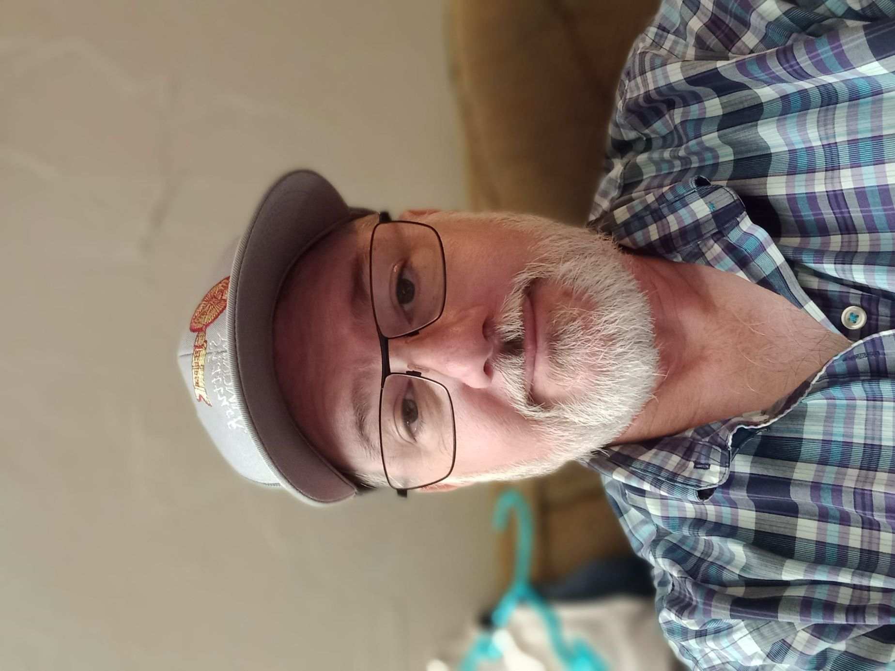

About Us

- I have been working with computers since about 1986. I started off as a data analyst using Foxpro for DOS and MS Excel to generate data analysis reports for a direct mailing company in Bellevue, WA.
- From there, I took a position working with Foxpro for DOS and a suite of software to prepare client data for mailing called PostalSoft in Kent, WA.
- I was hired on to continue to work with client data in the direct mail industry. My next job dealt with Xerox printers with with large reels holding data. I also learned a MS Word 3rd party app to design print and merge data for printing on the Xerox machines.
- I then took a position where we moved to MS Foxpro for Windows and upgraded versions of the PostalSoft program. I also took a lead position in the printing department and they had a version of software to create and merge documents into a printable form for Xerox printers.
- I had a couple of jobs doing the above work before I landed my first "programming" job. I was attending college and met someone that introduced me to a manufacturing company. I worked with MS Access and eventually turned the small app into an intregal part of their manufacturing line in Auburn, WA.
- I then landed another job in the direct mail industry where i worked with VB6 and MS SQL to custom design programs that would create beautiful pdf documents to generate printed statements for banks and credit unions among other clientele in Renton, WA.
- I then moved and took up a job at a bank and learned some IT skills and began to work with the MS Teams and Office 365 environment.
- Currently, I am working as a copier technician and have learned a number of skills in the area of network communication.
- On the side, I am learning to create website as you see here.